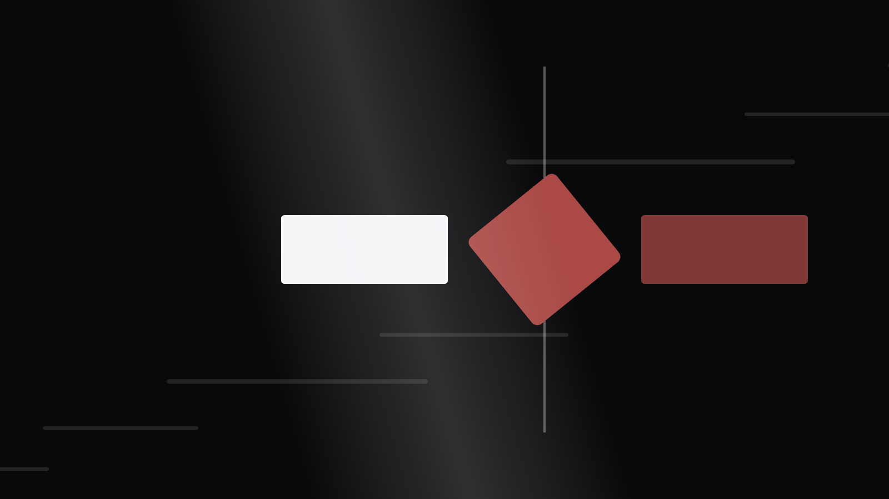

Bốn trang · một bảng điều khiển mỗi trang
Mỗi tấm nghiêng theo con trỏ, có đèn rê bám chuột và vệt sáng quét ngang mặt giấy. Bảng cài đặt trong từng trang cho bạn chỉnh biên độ lắc, tốc độ, cường độ đèn và chất phim — thiết lập lưu lại trên máy bạn.